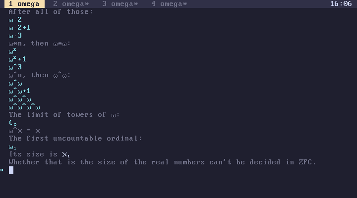
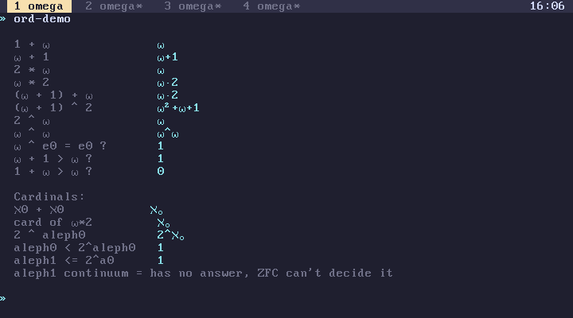
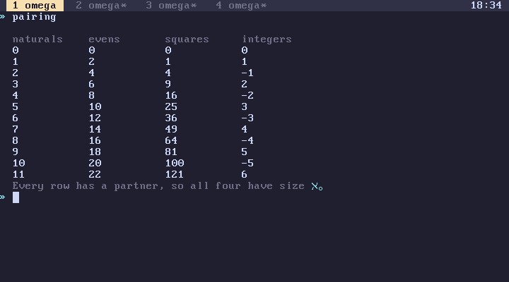
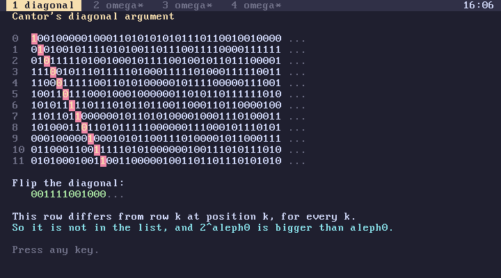
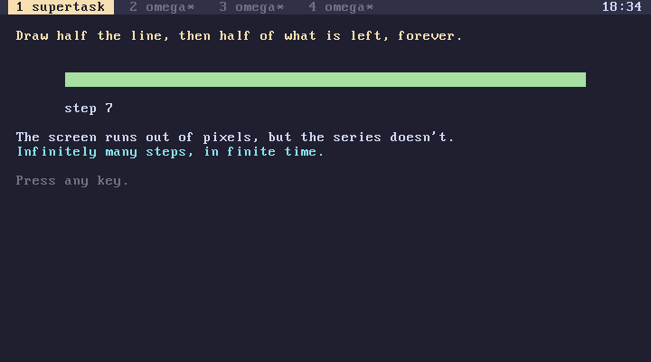
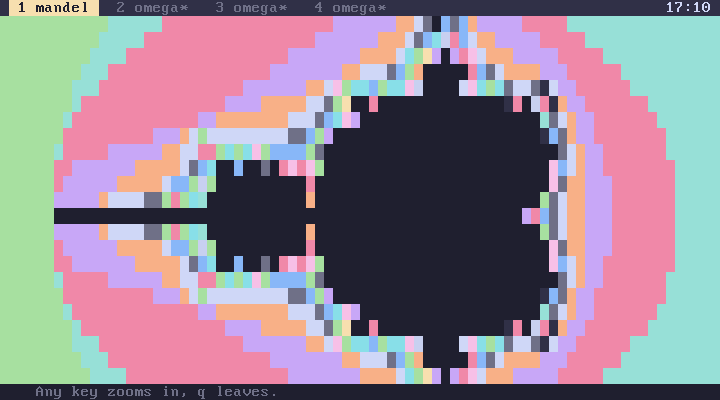
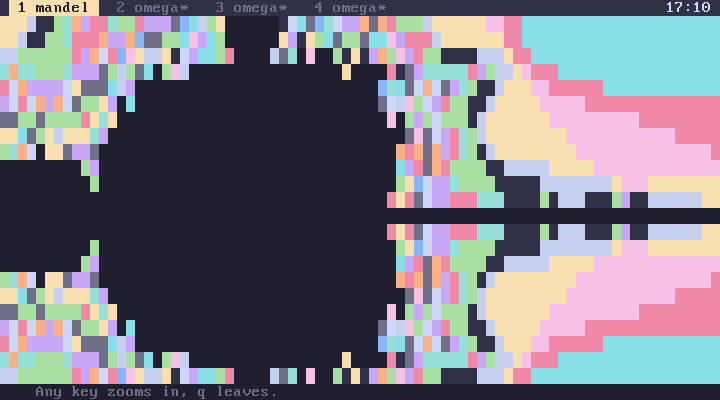
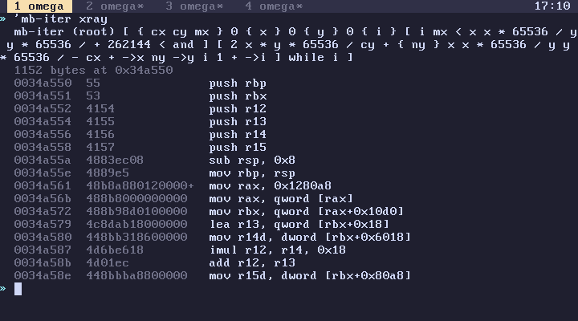

subverge
subvergeDemos
The demos show omega's infinite values at work, and mandel shows what the JIT does for a tight loop. Their source, shown by 'name open, uses the ordinal and cardinal words throughout. For the values themselves, see ordinals and cardinals.
pairing, diagonal and supertask act out three of the arguments from Vsauce's How To Count Past Infinity: pairing sets off one to one, Cantor's diagonal, and fitting infinitely many steps into a finite time. Watch it first and the demos make more sense.
count
count
Counts upward, one value at a time, from 0 through the finite numbers and on past them:
- 0 to 5, then ω, ω+1, ω+2: the first positions after every natural number;
- ω·2, ω·2+1, ω·3: the same again, repeated;
- ω², ω²+1, ω³: ω copies of ω, and onwards;
- ω^ω, ω^ω+1, ω^ω^ω, ω^ω^ω^ω: towers of exponents;
- ε₀, the limit of those towers, where ω^x = x;
- ω₁, the first uncountable ordinal, and its size, ℵ₁.
The last part is about the continuum hypothesis. Whether ℵ₁ is the size of the real numbers can't be decided in ZFC.
Every value it shows is computed by ordinary arithmetic, such as w w * show and w w w ^ ^ show.

ord-demo
ord-demo
Ordinal and cardinal arithmetic as a list of facts, each one a line of omega and its result:
| Line | Result | Why |
|---|---|---|
1 omega + |
ω | one element before ω changes nothing |
omega 1 + |
ω+1 | one element after ω does |
2 omega * |
ω | ω pairs are still ω in a row |
omega 2 * |
ω·2 | two copies of ω |
omega 1 + omega + |
ω·2 | the +1 is absorbed by the second ω |
omega 1 + 2 ^ |
ω²+ω+1 | (ω+1)·(ω+1), multiplied out |
2 omega ^ |
ω | the limit of 2, 4, 8, ... |
omega omega ^ |
ω^ω | |
omega epsilon0 ^ epsilon0 = |
1 | the defining property of ε₀ |
aleph0 aleph0 + |
ℵ₀ | two countable sets are countable together |
omega 2 * card |
ℵ₀ | ω·2 is a countable ordinal |
2 aleph0 ^ |
2^ℵ₀ | the size of the power set |
aleph1 continuum <= |
1 | true whatever the continuum hypothesis says |
Each line is printed by fact, which takes a label and a quote and prints both. Add lines of your own the same way.

pairing
pairing
Prints the natural numbers next to the even numbers, the squares and all the integers, one row at a time:
naturals evens squares integers
0 0 0 0
1 2 1 1
2 4 4 -1
3 6 9 2
Each column pairs off with the naturals one to one and nothing is left over in either, which is what having the same size means for infinite sets. All four have size ℵ₀, even though the evens and squares are proper subsets of the naturals and the integers contain them.

diagonal
diagonal
Cantor's diagonal argument, drawn. It fills the screen with rows of random binary digits, standing for a supposed list of every infinite binary sequence. Then it walks down the diagonal, highlighting digit k of row k and writing its opposite into a new row at the bottom.
The new row differs from every row in the list at one position at least, so it isn't in the list, and no list of binary sequences can be complete. That is why 2 aleph0 ^ is bigger than aleph0:
aleph0 2 aleph0 ^ < . 1

supertask
supertask
Zeno's dichotomy as a picture. It draws half of a line, then half of what is left, then half again, each step twice as fast as the one before. The screen runs out of character cells after a handful of steps, but the series it illustrates has infinitely many steps that add up to the whole line, and since the waits halve too, it would also finish in finite time.

powerset
[ 1 2 3 ] powerset .
Returns every subset of a list, starting from the empty one:
[ [ ] [ 1 ] [ 2 ] [ 1 2 ] [ 3 ] [ 1 3 ] [ 2 3 ] [ 1 2 3 ] ]
A list of n items has 2ⁿ subsets, which is the finite version of 2^ℵ₀. It builds the result by starting from the list holding only the empty list and, for each item, adding a copy of every subset so far with the item appended. Twenty items already give a million subsets, so keep the input short.
mandel
mandel
The Mandelbrot set in text mode. Each character cell is one point of the complex plane, coloured by how many iterations the point takes to escape. Any key moves on to the next of three views, each further in, and q leaves.
It uses fixed point arithmetic with 65536 standing for 1.0, so every value is an integer and every operation is exact. mandel-at draws one view, taking the real and imaginary parts of the centre, the distance between neighbouring cells and the iteration limit, all at the same scale:
-32768 0 2816 40 mandel-at


Its inner loop, mb-iter, is a while over integer arithmetic, which the JIT compiles into a tight loop. 'mb-iter xray shows the machine code, and running mandel once with jit-off and once with jit-on shows the difference in speed.
